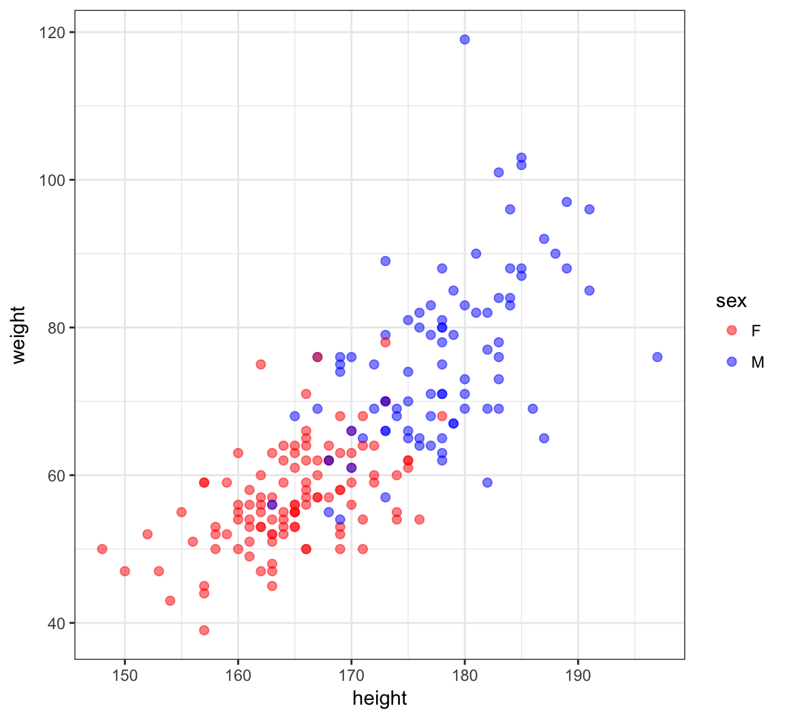
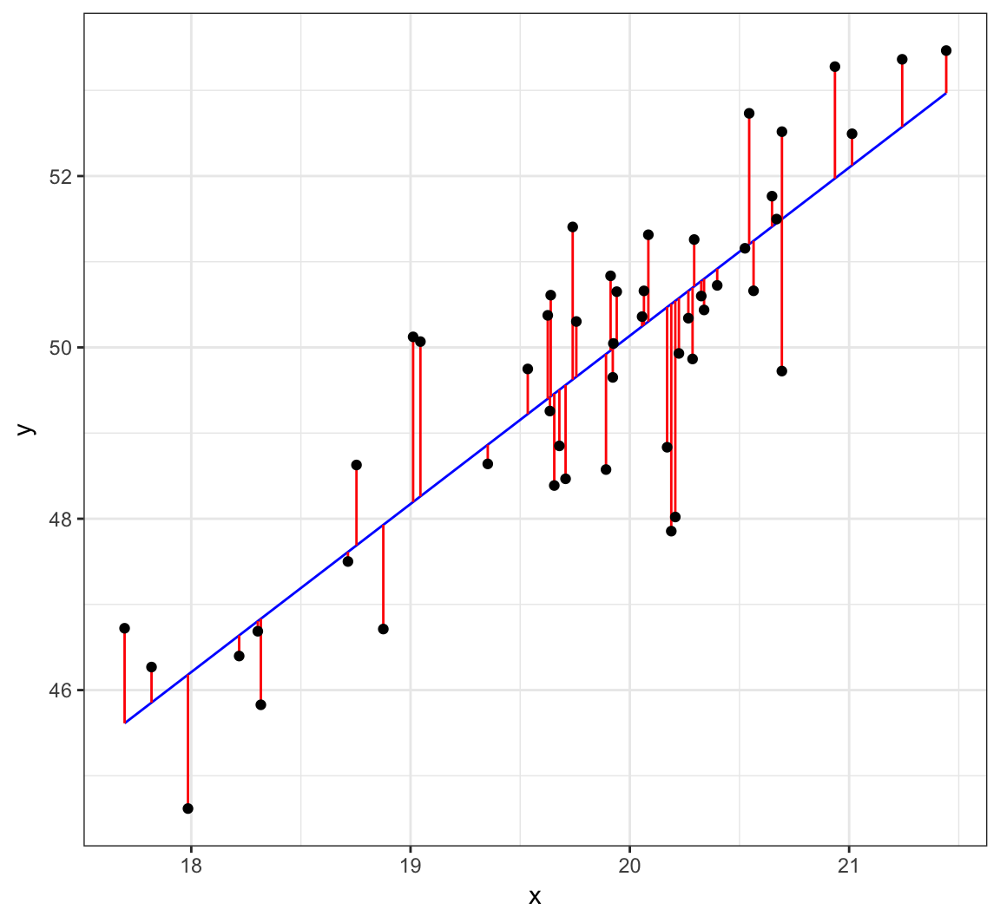
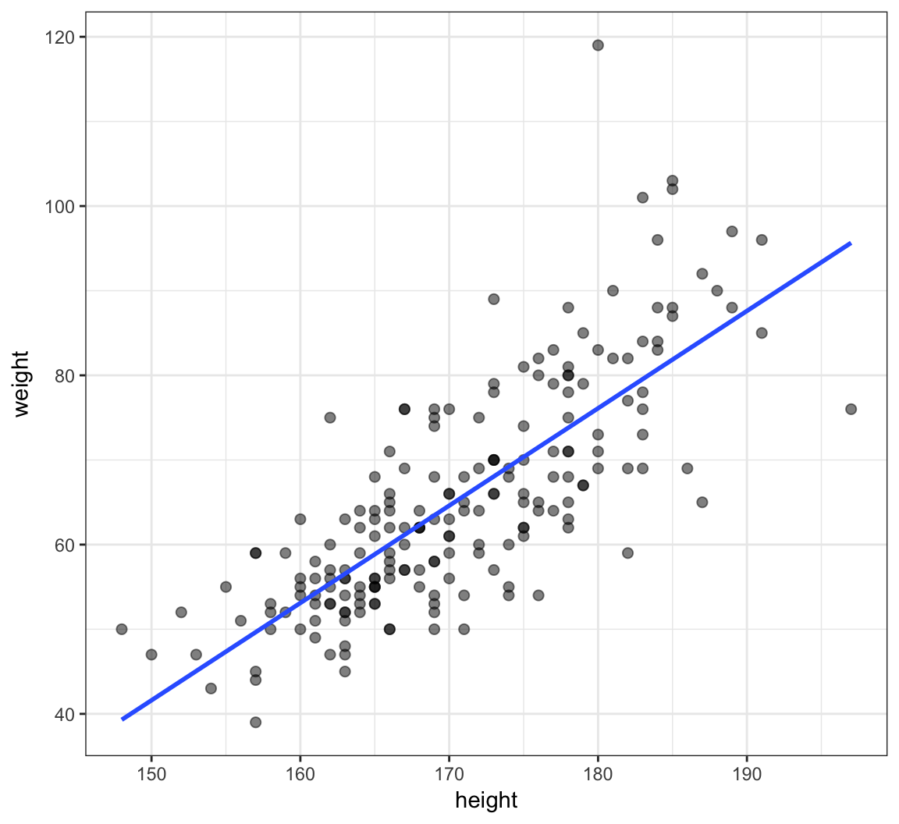
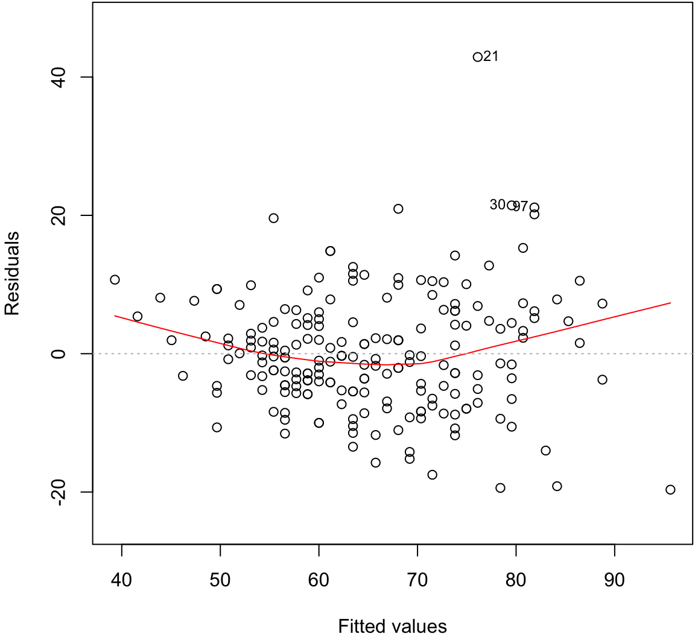
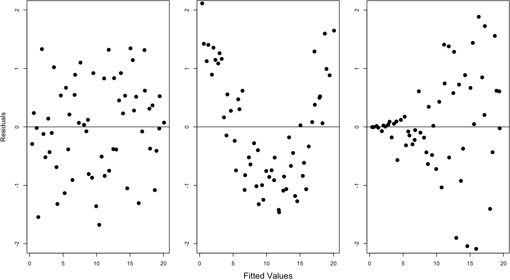
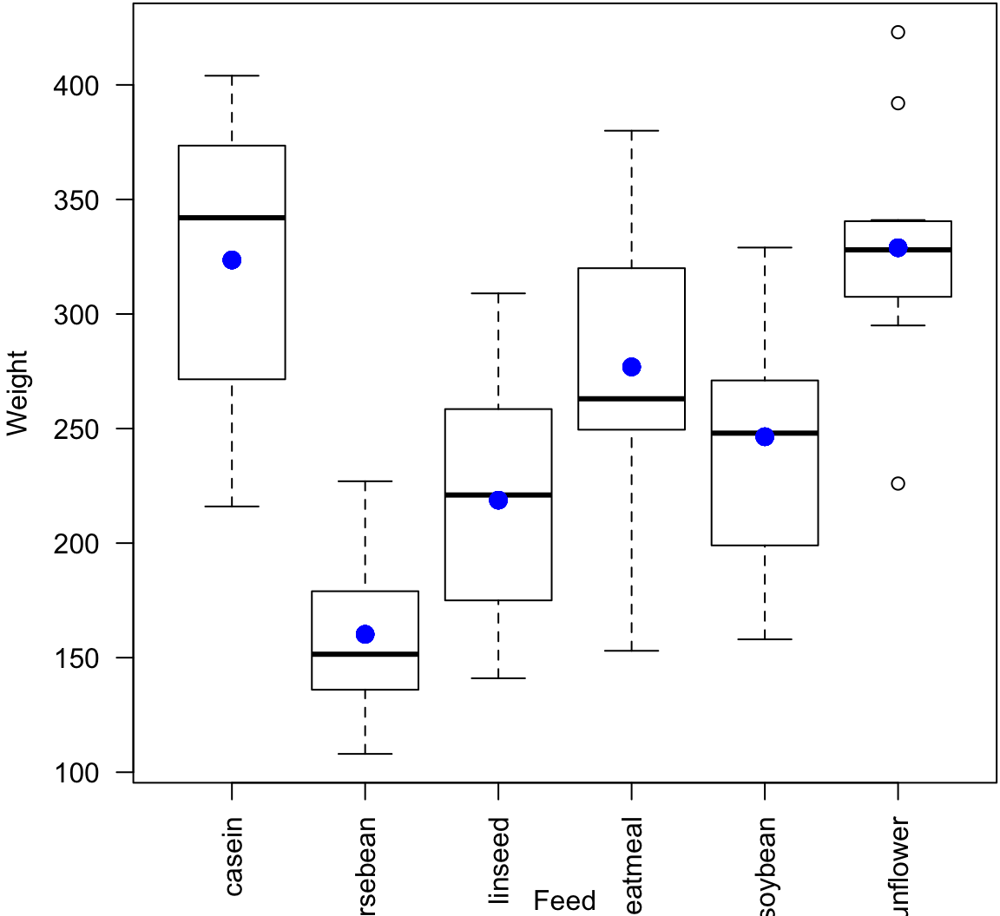
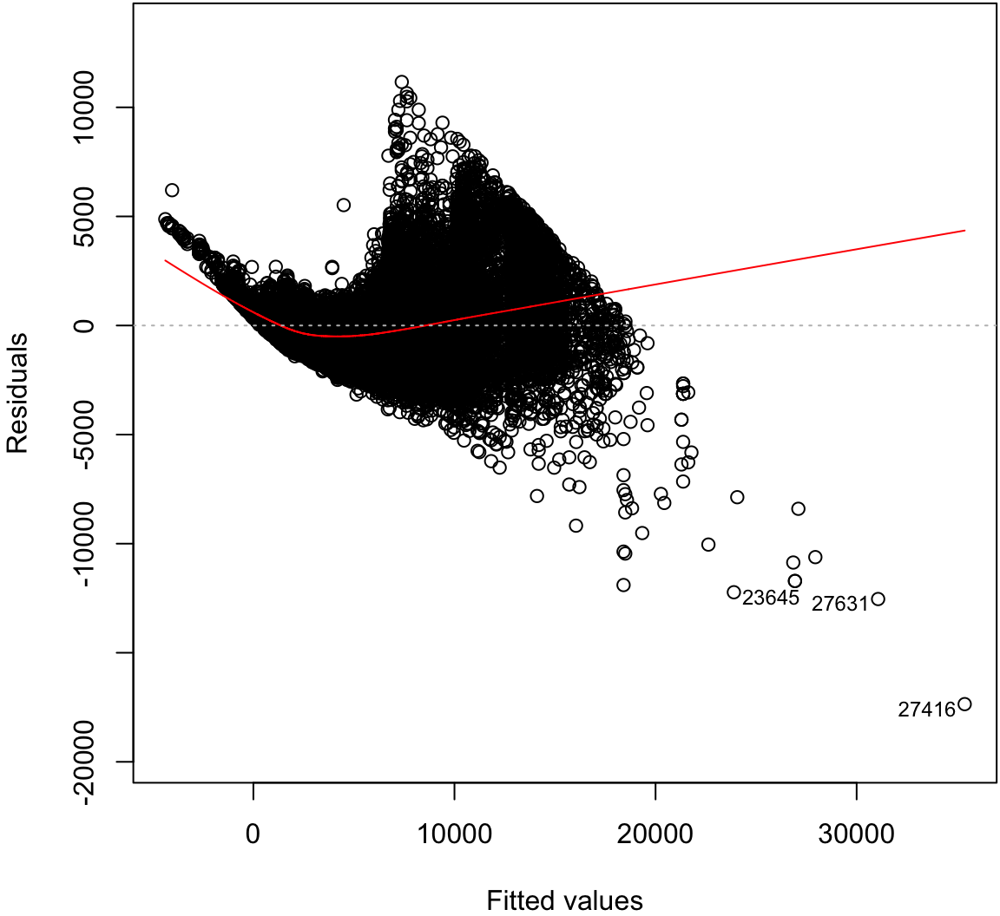
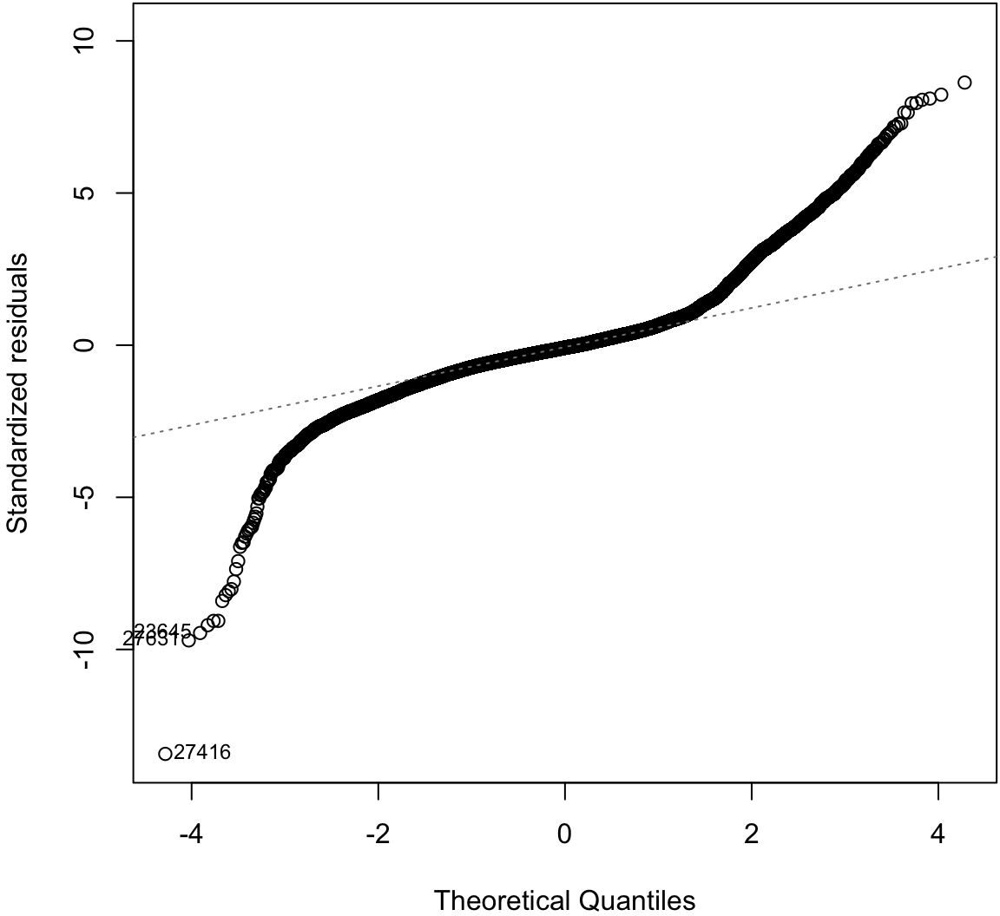
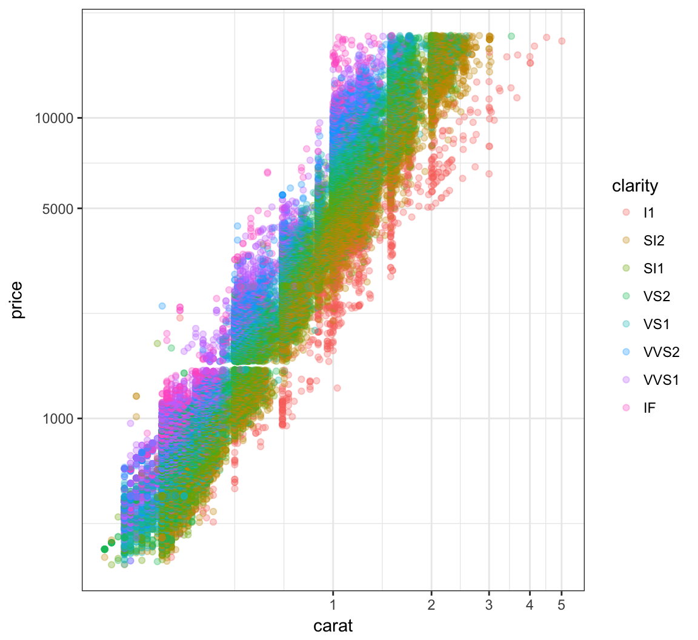
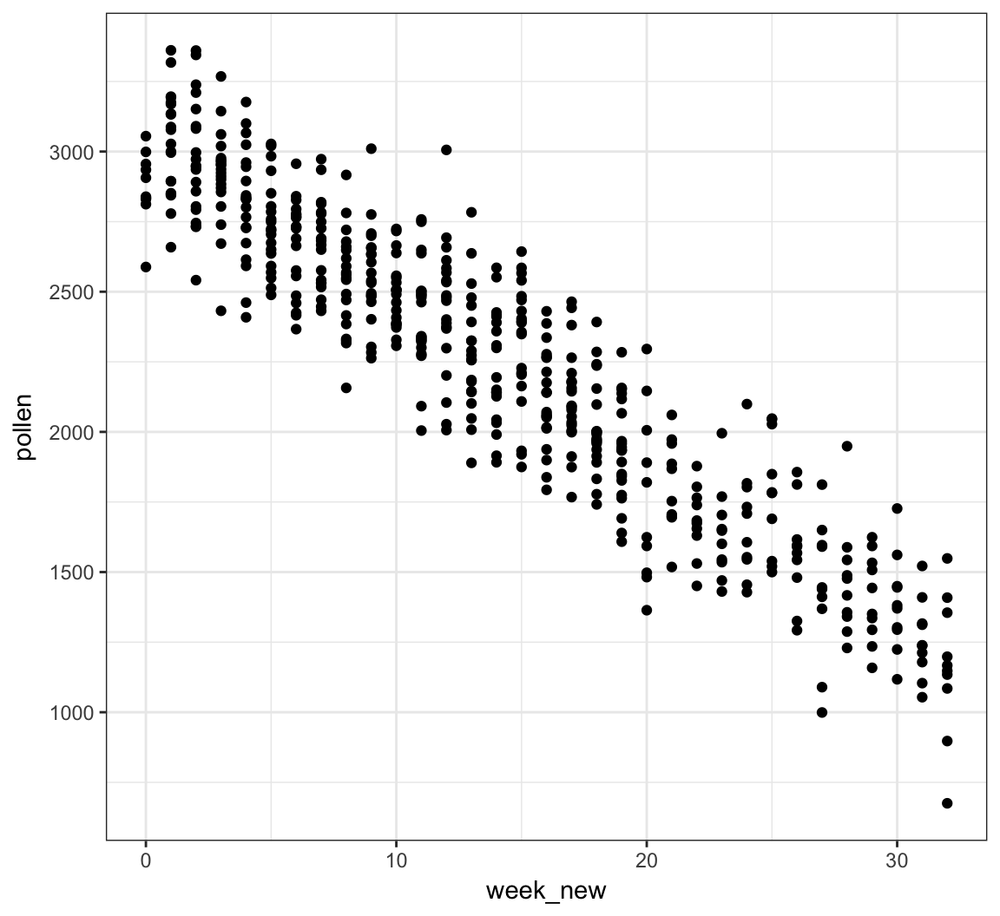

QCB 508 – Week 9
John D. Storey
Spring 2017

Statistical Models
Probabilistic Models
So far we have covered inference of paramters that quantify a population of interest.
This is called inference of probabilistic models.
Multivariate Models
Some of the probabilistic models we considered involve calculating conditional probabilities such as \(\Pr({\boldsymbol{Z}}| {\boldsymbol{X}}; {\boldsymbol{\theta}})\) or \(\Pr({\boldsymbol{\theta}}| {\boldsymbol{X}})\).
It is often the case that we would like to build a model that explains the variation of one variable in terms of other variables. Statistical modeling typically refers to this goal.
Variables
Let’s suppose our does comes in the form \(({\boldsymbol{X}}_1, Y_1), ({\boldsymbol{X}}_2, Y_2), \ldots, ({\boldsymbol{X}}_n, Y_n) \sim F\).
We will call \({\boldsymbol{X}}_i = (X_{i1}, X_{i2}, \ldots, X_{ip}) \in \mathbb{R}_{1 \times p}\) the explanatory variables and \(Y_i \in \mathbb{R}\) the dependent variable or response variable.
We can collect all variables as matrices
\[ {\boldsymbol{Y}}_{n \times 1} \ \mbox{ and } \ {\boldsymbol{X}}_{n \times p}\]
where each row is a unique observation.
Statistical Model
Statistical models are concerned with how variables are dependent. The most general model would be to infer
\[ \Pr(Y | {\boldsymbol{X}}) = h({\boldsymbol{X}}) \]
where we would specifically study the form of \(h(\cdot)\) to understand how \(Y\) is dependent on \({\boldsymbol{X}}\).
A more modest goal is to infer the transformed conditional expecation
\[ g\left({\operatorname{E}}[Y | {\boldsymbol{X}}]\right) = h({\boldsymbol{X}}) \]
which sometimes leads us back to an estimate of \(\Pr(Y | {\boldsymbol{X}})\).
Parametric vs Nonparametric
A parametric model is a pre-specified form of \(h(X)\) whose terms can be characterized by a formula and interpreted. This usually involves parameters on which inference can be performed, such as coefficients in a linear model.
A nonparametric model is a data-driven form of \(h(X)\) that is often very flexible and is not easily expressed or intepreted. A nonparametric model often does not include parameters on which we can do inference.
Simple Linear Regression
For random variables \((X_1, Y_1), (X_2, Y_2), \ldots, (X_n, Y_n)\), simple linear regression estimates the model
\[ Y_i = \beta_1 + \beta_2 X_i + E_i \]
where \({\operatorname{E}}[E_i] = 0\), \({\operatorname{Var}}(E_i) = \sigma^2\), and \({\operatorname{Cov}}(E_i, E_j) = 0\) for all \(1 \leq i, j \leq n\) and \(i \not= j\).
Note that in this model \({\operatorname{E}}[Y | X] = \beta_1 + \beta_2 X.\)
Ordinary Least Squares
Ordinary least squares (OLS) estimates the model
\[ \begin{aligned} Y_i & = \beta_1 X_{i1} + \beta_2 X_{i2} + \ldots + \beta_p X_{ip} + E_i \\ & = {\boldsymbol{X}}_i {\boldsymbol{\beta}}+ E_i \end{aligned} \]
where \({\rm E}[E_i] = 0\), \({\rm Var}(E_i) = \sigma^2\), and \({\operatorname{Cov}}(E_i, E_j) = 0\) for all \(1 \leq i, j \leq n\) and \(i \not= j\).
Note that typically \(X_{i1} = 1\) for all \(i\) so that \(\beta_1 X_{i1} = \beta_1\) serves as the intercept.
Generalized Least Squares
Generalized least squares (GLS) assumes the same model as OLS, except it allows for heteroskedasticity and covariance among the \(E_i\). Specifically, it is assumed that \({\boldsymbol{E}}= (E_1, \ldots, E_n)^T\) is distributed as
\[ {\boldsymbol{E}}_{n \times 1} \sim (\boldsymbol{0}, {\boldsymbol{\Sigma}}) \] where \(\boldsymbol{0}\) is the expected value \({\boldsymbol{\Sigma}}= (\sigma_{ij})\) is the \(n \times n\) symmetric covariance matrix.
Matrix Form of Linear Models
We can write the models as
\[ {\boldsymbol{Y}}_{n \times 1} = {\boldsymbol{X}}_{n \times p} {\boldsymbol{\beta}}_{p \times 1} + {\boldsymbol{E}}_{n \times 1} \]
where simple linear regression, OLS, and GLS differ in the value of \(p\) or the distribution of the \(E_i\). We can also write the conditional expecation and covariance as
\[ {\operatorname{E}}[{\boldsymbol{Y}}| {\boldsymbol{X}}] = {\boldsymbol{X}}{\boldsymbol{\beta}}, \ {\operatorname{Cov}}({\boldsymbol{Y}}| {\boldsymbol{X}}) = {\boldsymbol{\Sigma}}. \]
Least Squares Regression
In simple linear regression, OLS, and GLS, the \({\boldsymbol{\beta}}\) parameters are fit by minimizing the sum of squares between \({\boldsymbol{Y}}\) and \({\boldsymbol{X}}{\boldsymbol{\beta}}\).
Fitting these models by “least squares” satisfies two types of optimality:
- Gauss-Markov Theorem
- Maximum likelihood estimate when in addition \({\boldsymbol{E}}\sim \mbox{MVN}_n(\boldsymbol{0}, {\boldsymbol{\Sigma}})\)
Details will follow on these.
Generalized Linear Models
The generalized linear model (GLM) builds from OLS and GLS to allow the response variable to be distributed according to an exponential family distribution. Suppose that \(\eta(\theta)\) is function of the expected value into the natural parameter. The estimated model is
\[ \eta\left({\operatorname{E}}[Y | {\boldsymbol{X}}]\right) = {\boldsymbol{X}}{\boldsymbol{\beta}}\]
which is fit by maximized likelihood estimation.
Generalized Additive Models
Next week, we will finally arrive at inferring semiparametric models where \(Y | {\boldsymbol{X}}\) is distributed according to an exponential family distribution. The models, which are called generalized additive models (GAMs), will be of the form
\[ \eta\left({\operatorname{E}}[Y | {\boldsymbol{X}}]\right) = \sum_{j=1}^p \sum_{k=1}^d h_k(X_{j}) \]
where \(\eta\) is the canonical link function and the \(h_k(\cdot)\) functions are very flexible.
Some Trade-offs
There are several important trade-offs encountered in statistical modeling:
- Bias vs variance
- Accuracy vs computational time
- Flexibility vs intepretability
These are not mutually exclusive phenomena.
Bias and Variance
Suppose we estimate \(Y = h({\boldsymbol{X}}) + E\) by some \(\hat{Y} = \hat{h}({\boldsymbol{X}})\). The following bias-variance trade-off exists:
\[ \begin{aligned} {\operatorname{E}}\left[\left(Y - \hat{Y}\right)^2\right] & = {\rm E}\left[\left(h({\boldsymbol{X}}) + E - \hat{h}({\boldsymbol{X}})\right)^2\right] \\ \ & = {\rm E}\left[\left(h({\boldsymbol{X}}) - \hat{h}({\boldsymbol{X}})\right)^2\right] + {\rm Var}(E) \\ \ & = \left(h({\boldsymbol{X}}) - {\rm E}[\hat{h}({\boldsymbol{X}})]\right)^2 + {\rm Var}\left(\hat{h}({\boldsymbol{X}})\right)^2 + {\rm Var}(E) \\ \ & = \mbox{bias}^2 + \mbox{variance} + {\rm Var}(E) \end{aligned} \]
Motivating Examples
Sample Correlation
Least squares regression “modelizes” correlation. Suppose we observe \(n\) pairs of data \((x_1, y_1), (x_2, y_2), \ldots, (x_n, y_n)\). Their sample correlation is
\[\begin{eqnarray} r_{xy} & = & \frac{\sum_{i=1}^n (x_i - \overline{x}) (y_i - \overline{y})}{\sqrt{\sum_{i=1}^n (x_i - \overline{x})^2 \sum_{i=1}^n (y_i - \overline{y})^2}} \\ \ & = & \frac{\sum_{i=1}^n (x_i - \overline{x}) (y_i - \overline{y})}{(n-1) s_x s_y} \end{eqnarray}\]where \(s_x\) and \(s_y\) are the sample standard deviations of each measured variable.
Example: Hand Size Vs. Height
> library("MASS")
> data("survey", package="MASS")
> head(survey)
Sex Wr.Hnd NW.Hnd W.Hnd Fold Pulse Clap Exer Smoke
1 Female 18.5 18.0 Right R on L 92 Left Some Never
2 Male 19.5 20.5 Left R on L 104 Left None Regul
3 Male 18.0 13.3 Right L on R 87 Neither None Occas
4 Male 18.8 18.9 Right R on L NA Neither None Never
5 Male 20.0 20.0 Right Neither 35 Right Some Never
6 Female 18.0 17.7 Right L on R 64 Right Some Never
Height M.I Age
1 173.00 Metric 18.250
2 177.80 Imperial 17.583
3 NA <NA> 16.917
4 160.00 Metric 20.333
5 165.00 Metric 23.667
6 172.72 Imperial 21.000> ggplot(data = survey, mapping=aes(x=Wr.Hnd, y=Height)) +
+ geom_point() + geom_vline(xintercept=mean(survey$Wr.Hnd, na.rm=TRUE)) +
+ geom_hline(yintercept=mean(survey$Height, na.rm=TRUE))
Cor. of Hand Size and Height
> cor.test(x=survey$Wr.Hnd, y=survey$Height)
Pearson's product-moment correlation
data: survey$Wr.Hnd and survey$Height
t = 10.792, df = 206, p-value < 2.2e-16
alternative hypothesis: true correlation is not equal to 0
95 percent confidence interval:
0.5063486 0.6813271
sample estimates:
cor
0.6009909 L/R Hand Sizes
> ggplot(data = survey) +
+ geom_point(aes(x=Wr.Hnd, y=NW.Hnd))
Correlation of Hand Sizes
> cor.test(x=survey$Wr.Hnd, y=survey$NW.Hnd)
Pearson's product-moment correlation
data: survey$Wr.Hnd and survey$NW.Hnd
t = 45.712, df = 234, p-value < 2.2e-16
alternative hypothesis: true correlation is not equal to 0
95 percent confidence interval:
0.9336780 0.9597816
sample estimates:
cor
0.9483103 Davis Data
> library("car")
> data("Davis", package="car")> htwt <- tbl_df(Davis)
> htwt[12,c(2,3)] <- htwt[12,c(3,2)]
> head(htwt)
# A tibble: 6 × 5
sex weight height repwt repht
<fctr> <int> <int> <int> <int>
1 M 77 182 77 180
2 F 58 161 51 159
3 F 53 161 54 158
4 M 68 177 70 175
5 F 59 157 59 155
6 M 76 170 76 165Height and Weight
> ggplot(htwt) +
+ geom_point(aes(x=height, y=weight, color=sex), size=2, alpha=0.5) +
+ scale_color_manual(values=c("red", "blue"))
Correlation of Height and Weight
> cor.test(x=htwt$height, y=htwt$weight)
Pearson's product-moment correlation
data: htwt$height and htwt$weight
t = 17.04, df = 198, p-value < 2.2e-16
alternative hypothesis: true correlation is not equal to 0
95 percent confidence interval:
0.7080838 0.8218898
sample estimates:
cor
0.7710743 Correlation Among Females
> htwt %>% filter(sex=="F") %>%
+ cor.test(~ height + weight, data = .)
Pearson's product-moment correlation
data: height and weight
t = 6.2801, df = 110, p-value = 6.922e-09
alternative hypothesis: true correlation is not equal to 0
95 percent confidence interval:
0.3627531 0.6384268
sample estimates:
cor
0.5137293 Correlation Among Males
> htwt %>% filter(sex=="M") %>%
+ cor.test(~ height + weight, data = .)
Pearson's product-moment correlation
data: height and weight
t = 5.9388, df = 86, p-value = 5.922e-08
alternative hypothesis: true correlation is not equal to 0
95 percent confidence interval:
0.3718488 0.6727460
sample estimates:
cor
0.5392906 Why are the stratified correlations lower?
Simple Linear Regression
Definition
For random variables \((X_1, Y_1), (X_2, Y_2), \ldots, (X_n, Y_n)\), simple linear regression estimates the model
\[ Y_i = \beta_1 + \beta_2 X_i + E_i \]
where \({\operatorname{E}}[E_i] = 0\), \({\operatorname{Var}}(E_i) = \sigma^2\), and \({\operatorname{Cov}}(E_i, E_j) = 0\) for all \(1 \leq i, j \leq n\) and \(i \not= j\).
Rationale
Least squares linear regression is one of the simplest and most useful modeling systems for building a model that explains the variation of one variable in terms of other variables.
It is simple to fit, it satisfies some optimality criteria, and it is straightforward to check assumptions on the data so that statistical inference can be performed.
Setup
Suppose that we have observed \(n\) pairs of data \((x_1, y_1), (x_2, y_2), \ldots, (x_n, y_n)\).
Least squares linear regression models variation of the response variable \(y\) in terms of the explanatory variable \(x\) in the form of \(\beta_1 + \beta_2 x\), where \(\beta_1\) and \(\beta_2\) are chosen to satisfy a least squares optimization.
Line Minimizing Squared Error
The least squares regression line is formed from the value of \(\beta_1\) and \(\beta_2\) that minimize:
\[\sum_{i=1}^n \left( y_i - \beta_1 - \beta_2 x_i \right)^2.\]
For a given set of data, there is a unique solution to this minimization as long as there are at least two unique values among \(x_1, x_2, \ldots, x_n\).
Let \(\hat{\beta_1}\) and \(\hat{\beta_2}\) be the values that minimize this sum of squares.
Least Squares Solution
These values are:
\[\hat{\beta}_2 = r_{xy} \frac{s_y}{s_x}\]
\[\hat{\beta}_1 = \overline{y} - \hat{\beta}_2 \overline{x}\]
These values have a useful interpretation.
Visualizing Least Squares Line

Example: Height and Weight
> ggplot(data=htwt, mapping=aes(x=height, y=weight)) +
+ geom_point(size=2, alpha=0.5) +
+ geom_smooth(method="lm", se=FALSE, formula=y~x)
Calculate the Line Directly
> beta2 <- cor(htwt$height, htwt$weight) *
+ sd(htwt$weight) / sd(htwt$height)
> beta2
[1] 1.150092
>
> beta1 <- mean(htwt$weight) - beta2 * mean(htwt$height)
> beta1
[1] -130.9104
>
> yhat <- beta1 + beta2 * htwt$heightPlot the Line
> df <- data.frame(htwt, yhat=yhat)
> ggplot(data=df) + geom_point(aes(x=height, y=weight), size=2, alpha=0.5) +
+ geom_line(aes(x=height, y=yhat), color="blue", size=1.2)
Observed Data, Fits, and Residuals
We observe data \((x_1, y_1), \ldots, (x_n, y_n)\). Note that we only observe \(X_i\) and \(Y_i\) from the generative model \(Y_i = \beta_1 + \beta_2 X_i + E_i\).
We calculate fitted values and observed residuals:
\[\hat{y}_i = \hat{\beta}_1 + \hat{\beta}_2 x_i\]
\[\hat{e}_i = y_i - \hat{y}_i\]
By construction, it is the case that \(\sum_{i=1}^n \hat{e}_i = 0\).
Proportion of Variation Explained
The proportion of variance explained by the fitted model is called \(R^2\) or \(r^2\). It is calculated by:
\[r^2 = \frac{s^2_{\hat{y}}}{s^2_{y}}\]
lm() Function in R
Calculate the Line in R
The syntax for a model in R is
response variable ~ explanatory variables
where the explanatory variables component can involve several types of terms.
> myfit <- lm(weight ~ height, data=htwt)
> myfit
Call:
lm(formula = weight ~ height, data = htwt)
Coefficients:
(Intercept) height
-130.91 1.15 An lm Object is a List
> class(myfit)
[1] "lm"
> is.list(myfit)
[1] TRUE
> names(myfit)
[1] "coefficients" "residuals" "effects"
[4] "rank" "fitted.values" "assign"
[7] "qr" "df.residual" "xlevels"
[10] "call" "terms" "model" From the R Help
lmreturns an object of class “lm” or for multiple responses of class c(“mlm”, “lm”).
The functions
summaryandanovaare used to obtain and print a summary and analysis of variance table of the results. The generic accessor functions coefficients, effects, fitted.values and residuals extract various useful features of the value returned bylm.
Some of the List Items
These are some useful items to access from the lm object:
coefficients: a named vector of coefficientsresiduals: the residuals, that is response minus fitted values.fitted.values: the fitted mean values.df.residual: the residual degrees of freedom.call: the matched call.model: if requested (the default), the model frame used.
summary()
> summary(myfit)
Call:
lm(formula = weight ~ height, data = htwt)
Residuals:
Min 1Q Median 3Q Max
-19.658 -5.381 -0.555 4.807 42.894
Coefficients:
Estimate Std. Error t value Pr(>|t|)
(Intercept) -130.91040 11.52792 -11.36 <2e-16 ***
height 1.15009 0.06749 17.04 <2e-16 ***
---
Signif. codes: 0 '***' 0.001 '**' 0.01 '*' 0.05 '.' 0.1 ' ' 1
Residual standard error: 8.505 on 198 degrees of freedom
Multiple R-squared: 0.5946, Adjusted R-squared: 0.5925
F-statistic: 290.4 on 1 and 198 DF, p-value: < 2.2e-16summary() List Elements
> mysummary <- summary(myfit)
> names(mysummary)
[1] "call" "terms" "residuals"
[4] "coefficients" "aliased" "sigma"
[7] "df" "r.squared" "adj.r.squared"
[10] "fstatistic" "cov.unscaled" Using tidy()
> library(broom)
> tidy(myfit)
term estimate std.error statistic p.value
1 (Intercept) -130.910400 11.52792138 -11.35594 2.438012e-23
2 height 1.150092 0.06749465 17.03975 1.121241e-40Proportion of Variation Explained
The proportion of variance explained by the fitted model is called \(R^2\) or \(r^2\). It is calculated by:
\[r^2 = \frac{s^2_{\hat{y}}}{s^2_{y}}\]
> summary(myfit)$r.squared
[1] 0.5945555
>
> var(myfit$fitted.values)/var(htwt$weight)
[1] 0.5945555Assumptions to Verify
The assumptions on the above linear model are really about the joint distribution of the residuals, which are not directly observed. On data, we try to verify:
- The fitted values and the residuals show no trends with respect to each other
- The residuals are distributed approximately Normal\((0, \sigma^2)\)
- A constant variance is called homoscedasticity
- A non-constant variance is called heteroscedascity
- There are no lurking variables
There are two plots we will use in this course to investigate the first two.
Residual Distribution
> plot(myfit, which=1)
Normal Residuals Check
> plot(myfit, which=2)
Fitted Values Vs. Obs. Residuals

Ordinary Least Squares
Ordinary least squares (OLS) estimates the model
\[ \begin{aligned} Y_i & = \beta_1 X_{i1} + \beta_2 X_{i2} + \ldots + \beta_p X_{ip} + E_i \\ & = {\boldsymbol{X}}_i {\boldsymbol{\beta}}+ E_i \end{aligned} \]
where \({\rm E}[E_i] = 0\), \({\rm Var}(E_i) = \sigma^2\), and \({\operatorname{Cov}}(E_i, E_j) = 0\) for all \(1 \leq i, j \leq n\) and \(i \not= j\).
Note that typically \(X_{i1} = 1\) for all \(i\) so that \(\beta_1 X_{i1} = \beta_1\) serves as the intercept.
OLS Solution
The estimates of \(\beta_1, \beta_2, \ldots, \beta_p\) are found by identifying the values that minimize:
\[ \begin{aligned} \sum_{i=1}^n \left[ Y_i - (\beta_1 X_{i1} + \beta_2 X_{i2} + \ldots + \beta_p X_{ip}) \right]^2 \\ = ({\boldsymbol{Y}}- {\boldsymbol{X}}{\boldsymbol{\beta}})^T ({\boldsymbol{Y}}- {\boldsymbol{X}}{\boldsymbol{\beta}}) \end{aligned} \]
The solution is expressed in terms of matrix algebra computations:
\[ \hat{{\boldsymbol{\beta}}} = ({\boldsymbol{X}}^T {\boldsymbol{X}})^{-1} {\boldsymbol{X}}^T {\boldsymbol{Y}}. \]
Sample Variance
Let the predicted values of the model be
\[ \hat{{\boldsymbol{Y}}} = {\boldsymbol{X}}\hat{{\boldsymbol{\beta}}} = {\boldsymbol{X}}({\boldsymbol{X}}^T {\boldsymbol{X}})^{-1} {\boldsymbol{X}}^T {\boldsymbol{Y}}. \]
We estimate \(\sigma^2\) by the OLS sample variance
\[ S^2 = \frac{\sum_{i=1}^n (Y_i - \hat{Y}_i)^2}{n-p}. \]
Sample Covariance
The \(p\)-vector \(\hat{{\boldsymbol{\beta}}}\) has covariance matrix
\[ {\operatorname{Cov}}(\hat{{\boldsymbol{\beta}}} | {\boldsymbol{X}}) = ({\boldsymbol{X}}^T {\boldsymbol{X}})^{-1} \sigma^2. \]
Its estimated covariance matrix is
\[ \widehat{{\operatorname{Cov}}}(\hat{{\boldsymbol{\beta}}}) = ({\boldsymbol{X}}^T {\boldsymbol{X}})^{-1} S^2. \]
Expected Values
Under the assumption that \({\rm E}[E_i] = 0\), \({\rm Var}(E_i) = \sigma^2\), and \({\operatorname{Cov}}(E_i, E_j) = 0\) for all \(1 \leq i, j \leq n\) and \(i \not= j\), we have the following:
\[ {\operatorname{E}}\left[ \left. \hat{{\boldsymbol{\beta}}} \right| {\boldsymbol{X}}\right] = {\boldsymbol{\beta}}\]
\[ {\operatorname{E}}\left[ \left. S^2 \right| {\boldsymbol{X}}\right] = \sigma^2 \]
\[ {\operatorname{E}}\left[\left. ({\boldsymbol{X}}^T {\boldsymbol{X}})^{-1} S^2 \right| {\boldsymbol{X}}\right] = {\operatorname{Cov}}\left(\hat{{\boldsymbol{\beta}}}\right) \]
\[ {\operatorname{Cov}}\left(\hat{\beta}_j, Y_i - \hat{Y}_i\right) = \boldsymbol{0}. \]
Standard Error
The standard error of \(\hat{\beta}_j\) is the square root of the \((j, j)\) diagonal entry of \(({\boldsymbol{X}}^T {\boldsymbol{X}})^{-1} \sigma^2\)
\[ {\operatorname{se}}(\hat{\beta}_j) = \sqrt{\left[({\boldsymbol{X}}^T {\boldsymbol{X}})^{-1} \sigma^2\right]_{jj}} \]
and estimated standard error is
\[ \hat{{\operatorname{se}}}(\hat{\beta}_j) = \sqrt{\left[({\boldsymbol{X}}^T {\boldsymbol{X}})^{-1} S^2\right]_{jj}} \]
Proportion of Variance Explained
The proportion of variance explained is defined equivalently to the simple linear regression scneario:
\[ R^2 = \frac{\sum_{i=1}^n (\hat{Y}_i - \bar{Y})^2}{\sum_{i=1}^n (Y_i - \bar{Y})^2}. \]
Normal Errors
Suppose we assume \(E_1, E_2, \ldots, E_n {\; \stackrel{\text{iid}}{\sim}\;}\mbox{Normal}(0, \sigma^2)\). Then
\[ \ell\left({\boldsymbol{\beta}}, \sigma^2 ; {\boldsymbol{Y}}, {\boldsymbol{X}}\right) \propto -n\log(\sigma^2) -\frac{1}{\sigma^2} ({\boldsymbol{Y}}- {\boldsymbol{X}}{\boldsymbol{\beta}})^T ({\boldsymbol{Y}}- {\boldsymbol{X}}{\boldsymbol{\beta}}). \]
Since minimizing \(({\boldsymbol{Y}}- {\boldsymbol{X}}{\boldsymbol{\beta}})^T ({\boldsymbol{Y}}- {\boldsymbol{X}}{\boldsymbol{\beta}})\) maximizes the likelihood with respect to \({\boldsymbol{\beta}}\), this implies \(\hat{{\boldsymbol{\beta}}}\) is the MLE for \({\boldsymbol{\beta}}\).
It can also be calculated that \(\frac{n-p}{n} S^2\) is the MLE for \(\sigma^2\).
Sampling Distribution
When \(E_1, E_2, \ldots, E_n {\; \stackrel{\text{iid}}{\sim}\;}\mbox{Normal}(0, \sigma^2)\), it follows that, conditional on \({\boldsymbol{X}}\):
\[ \hat{{\boldsymbol{\beta}}} \sim \mbox{MVN}_p\left({\boldsymbol{\beta}}, ({\boldsymbol{X}}^T {\boldsymbol{X}})^{-1} \sigma^2 \right) \]
\[ \begin{aligned} S^2 \frac{n-p}{\sigma^2} & \sim \chi^2_{n-p} \\ \frac{\hat{\beta}_j - \beta_j}{\hat{{\operatorname{se}}}(\hat{\beta}_j)} & \sim t_{n-p} \end{aligned} \]
CLT
Under the assumption that \({\rm E}[E_i] = 0\), \({\rm Var}(E_i) = \sigma^2\), and \({\operatorname{Cov}}(E_i, E_j) = 0\) for \(i \not= j\), it follows that as \(n \rightarrow \infty\),
\[ \sqrt{n} \left(\hat{{\boldsymbol{\beta}}} - {\boldsymbol{\beta}}\right) \stackrel{D}{\longrightarrow} \mbox{MVN}_p\left( \boldsymbol{0}, ({\boldsymbol{X}}^T {\boldsymbol{X}})^{-1} \sigma^2 \right). \]
Gauss-Markov Theorem
Under the assumption that \({\rm E}[E_i] = 0\), \({\rm Var}(E_i) = \sigma^2\), and \({\operatorname{Cov}}(E_i, E_j) = 0\) for \(i \not= j\), the Gauss-Markov theorem shows that among all BLUEs, best linear unbiased estimators, the least squares estimate has the smallest mean-squared error.
Specifically, suppose that \(\tilde{{\boldsymbol{\beta}}}\) is a linear estimator (calculated from a linear operator on \({\boldsymbol{Y}}\)) where \({\operatorname{E}}[\tilde{{\boldsymbol{\beta}}} | {\boldsymbol{X}}] = {\boldsymbol{\beta}}\). Then
\[ {\operatorname{E}}\left[ \left. ({\boldsymbol{Y}}- {\boldsymbol{X}}\hat{{\boldsymbol{\beta}}})^T ({\boldsymbol{Y}}- {\boldsymbol{X}}\hat{{\boldsymbol{\beta}}}) \right| {\boldsymbol{X}}\right] \leq {\operatorname{E}}\left[ \left. ({\boldsymbol{Y}}- {\boldsymbol{X}}\tilde{{\boldsymbol{\beta}}})^T ({\boldsymbol{Y}}- {\boldsymbol{X}}\tilde{{\boldsymbol{\beta}}}) \right| {\boldsymbol{X}}\right]. \]
Generalized Least Squares
Generalized least squares (GLS) assumes the same model as OLS, except it allows for heteroskedasticity and covariance among the \(E_i\). Specifically, it is assumed that \({\boldsymbol{E}}= (E_1, \ldots, E_n)^T\) is distributed as
\[ {\boldsymbol{E}}_{n \times 1} \sim (\boldsymbol{0}, {\boldsymbol{\Sigma}}) \] where \(\boldsymbol{0}\) is the expected value \({\boldsymbol{\Sigma}}= (\sigma_{ij})\) is the \(n \times n\) covariance matrix.
The most straightforward way to navigate GLS results is to recognize that
\[ {\boldsymbol{\Sigma}}^{-1/2} {\boldsymbol{Y}}= {\boldsymbol{\Sigma}}^{-1/2}{\boldsymbol{X}}{\boldsymbol{\beta}}+ {\boldsymbol{\Sigma}}^{-1/2}{\boldsymbol{E}}\]
satisfies the assumptions of the OLS model.
GLS Solution
The solution to minimizing
\[ ({\boldsymbol{Y}}- {\boldsymbol{X}}{\boldsymbol{\beta}})^T {\boldsymbol{\Sigma}}^{-1} ({\boldsymbol{Y}}- {\boldsymbol{X}}{\boldsymbol{\beta}}) \]
is
\[ \hat{{\boldsymbol{\beta}}} = \left( {\boldsymbol{X}}^T {\boldsymbol{\Sigma}}^{-1} {\boldsymbol{X}}\right)^{-1} {\boldsymbol{X}}^T {\boldsymbol{\Sigma}}^{-1} {\boldsymbol{Y}}. \]
Other Results
The issue of estimating \({\boldsymbol{\Sigma}}\) if it is unknown is complicated. Other than estimates of \(\sigma^2\), the results from the OLS section recapitulate by replacing \({\boldsymbol{Y}}= {\boldsymbol{X}}{\boldsymbol{\beta}}+ {\boldsymbol{E}}\) with
\[ {\boldsymbol{\Sigma}}^{-1/2} {\boldsymbol{Y}}= {\boldsymbol{\Sigma}}^{-1/2}{\boldsymbol{X}}{\boldsymbol{\beta}}+ {\boldsymbol{\Sigma}}^{-1/2}{\boldsymbol{E}}. \]
For example, as \(n \rightarrow \infty\),
\[ \sqrt{n} \left(\hat{{\boldsymbol{\beta}}} - {\boldsymbol{\beta}}\right) \stackrel{D}{\longrightarrow} \mbox{MNV}_p\left( \boldsymbol{0}, ({\boldsymbol{X}}^T {\boldsymbol{\Sigma}}^{-1} {\boldsymbol{X}})^{-1} \right). \]
We also still have that
\[ {\operatorname{E}}\left[ \left. \hat{{\boldsymbol{\beta}}} \right| {\boldsymbol{X}}\right] = {\boldsymbol{\beta}}. \]
And when \({\boldsymbol{E}}\sim \mbox{MVN}_n(\boldsymbol{0}, {\boldsymbol{\Sigma}})\), \(\hat{{\boldsymbol{\beta}}}\) is the MLE.
OLS in R
R implements OLS of multiple explanatory variables exactly the same as with a single explanatory variable, except we need to show the sum of all explanatory variables that we want to use.
> lm(weight ~ height + sex, data=htwt)
Call:
lm(formula = weight ~ height + sex, data = htwt)
Coefficients:
(Intercept) height sexM
-76.6167 0.8106 8.2269 Weight Regressed on Height + Sex
> summary(lm(weight ~ height + sex, data=htwt))
Call:
lm(formula = weight ~ height + sex, data = htwt)
Residuals:
Min 1Q Median 3Q Max
-20.131 -4.884 -0.640 5.160 41.490
Coefficients:
Estimate Std. Error t value Pr(>|t|)
(Intercept) -76.6167 15.7150 -4.875 2.23e-06 ***
height 0.8105 0.0953 8.506 4.50e-15 ***
sexM 8.2269 1.7105 4.810 3.00e-06 ***
---
Signif. codes: 0 '***' 0.001 '**' 0.01 '*' 0.05 '.' 0.1 ' ' 1
Residual standard error: 8.066 on 197 degrees of freedom
Multiple R-squared: 0.6372, Adjusted R-squared: 0.6335
F-statistic: 173 on 2 and 197 DF, p-value: < 2.2e-16One Variable, Two Scales
We can include a single variable but on two different scales:
> htwt <- htwt %>% mutate(height2 = height^2)
> summary(lm(weight ~ height + height2, data=htwt))
Call:
lm(formula = weight ~ height + height2, data = htwt)
Residuals:
Min 1Q Median 3Q Max
-24.265 -5.159 -0.499 4.549 42.965
Coefficients:
Estimate Std. Error t value Pr(>|t|)
(Intercept) 107.117140 175.246872 0.611 0.542
height -1.632719 2.045524 -0.798 0.426
height2 0.008111 0.005959 1.361 0.175
Residual standard error: 8.486 on 197 degrees of freedom
Multiple R-squared: 0.5983, Adjusted R-squared: 0.5943
F-statistic: 146.7 on 2 and 197 DF, p-value: < 2.2e-16Interactions
It is possible to include products of explanatory variables, which is called an interaction.
> summary(lm(weight ~ height + sex + height:sex, data=htwt))
Call:
lm(formula = weight ~ height + sex + height:sex, data = htwt)
Residuals:
Min 1Q Median 3Q Max
-20.869 -4.835 -0.897 4.429 41.122
Coefficients:
Estimate Std. Error t value Pr(>|t|)
(Intercept) -45.6730 22.1342 -2.063 0.0404 *
height 0.6227 0.1343 4.637 6.46e-06 ***
sexM -55.6571 32.4597 -1.715 0.0880 .
height:sexM 0.3729 0.1892 1.971 0.0502 .
---
Signif. codes: 0 '***' 0.001 '**' 0.01 '*' 0.05 '.' 0.1 ' ' 1
Residual standard error: 8.007 on 196 degrees of freedom
Multiple R-squared: 0.6442, Adjusted R-squared: 0.6388
F-statistic: 118.3 on 3 and 196 DF, p-value: < 2.2e-16More on Interactions
What happens when there is an interaction between a quantitative explanatory variable and a factor explanatory variable? In the next plot, we show three models:
- Grey solid:
lm(weight ~ height, data=htwt) - Color dashed:
lm(weight ~ height + sex, data=htwt) - Color solid:
lm(weight ~ height + sex + height:sex, data=htwt)
Visualizing Three Different Models

Categorical Explanatory Variables
Example: Chicken Weights
> data("chickwts", package="datasets")
> head(chickwts)
weight feed
1 179 horsebean
2 160 horsebean
3 136 horsebean
4 227 horsebean
5 217 horsebean
6 168 horsebean
> summary(chickwts$feed)
casein horsebean linseed meatmeal soybean sunflower
12 10 12 11 14 12 Factor Variables in lm()
> chick_fit <- lm(weight ~ feed, data=chickwts)
> summary(chick_fit)
Call:
lm(formula = weight ~ feed, data = chickwts)
Residuals:
Min 1Q Median 3Q Max
-123.909 -34.413 1.571 38.170 103.091
Coefficients:
Estimate Std. Error t value Pr(>|t|)
(Intercept) 323.583 15.834 20.436 < 2e-16 ***
feedhorsebean -163.383 23.485 -6.957 2.07e-09 ***
feedlinseed -104.833 22.393 -4.682 1.49e-05 ***
feedmeatmeal -46.674 22.896 -2.039 0.045567 *
feedsoybean -77.155 21.578 -3.576 0.000665 ***
feedsunflower 5.333 22.393 0.238 0.812495
---
Signif. codes: 0 '***' 0.001 '**' 0.01 '*' 0.05 '.' 0.1 ' ' 1
Residual standard error: 54.85 on 65 degrees of freedom
Multiple R-squared: 0.5417, Adjusted R-squared: 0.5064
F-statistic: 15.36 on 5 and 65 DF, p-value: 5.936e-10Plot the Fit
> plot(chickwts$feed, chickwts$weight, xlab="Feed", ylab="Weight", las=2)
> points(chickwts$feed, chick_fit$fitted.values, col="blue", pch=20, cex=2)
ANOVA (Version 1)
ANOVA (analysis of variance) was originally developed as a statistical model and method for comparing differences in mean values between various groups.
ANOVA quantifies and tests for differences in response variables with respect to factor variables.
In doing so, it also partitions the total variance to that due to within and between groups, where groups are defined by the factor variables.
anova()
The classic ANOVA table:
> anova(chick_fit)
Analysis of Variance Table
Response: weight
Df Sum Sq Mean Sq F value Pr(>F)
feed 5 231129 46226 15.365 5.936e-10 ***
Residuals 65 195556 3009
---
Signif. codes: 0 '***' 0.001 '**' 0.01 '*' 0.05 '.' 0.1 ' ' 1> n <- length(chick_fit$residuals) # n <- 71
> (n-1)*var(chick_fit$fitted.values)
[1] 231129.2
> (n-1)*var(chick_fit$residuals)
[1] 195556
> (n-1)*var(chickwts$weight) # sum of above two quantities
[1] 426685.2
> (231129/5)/(195556/65) # F-statistic
[1] 15.36479How It Works
> levels(chickwts$feed)
[1] "casein" "horsebean" "linseed" "meatmeal" "soybean"
[6] "sunflower"
> head(chickwts, n=3)
weight feed
1 179 horsebean
2 160 horsebean
3 136 horsebean
> tail(chickwts, n=3)
weight feed
69 222 casein
70 283 casein
71 332 casein
> x <- model.matrix(weight ~ feed, data=chickwts)
> dim(x)
[1] 71 6Top of Design Matrix
> head(x)
(Intercept) feedhorsebean feedlinseed feedmeatmeal
1 1 1 0 0
2 1 1 0 0
3 1 1 0 0
4 1 1 0 0
5 1 1 0 0
6 1 1 0 0
feedsoybean feedsunflower
1 0 0
2 0 0
3 0 0
4 0 0
5 0 0
6 0 0Bottom of Design Matrix
> tail(x)
(Intercept) feedhorsebean feedlinseed feedmeatmeal
66 1 0 0 0
67 1 0 0 0
68 1 0 0 0
69 1 0 0 0
70 1 0 0 0
71 1 0 0 0
feedsoybean feedsunflower
66 0 0
67 0 0
68 0 0
69 0 0
70 0 0
71 0 0Model Fits
> chick_fit$fitted.values %>% round(digits=4) %>% unique()
[1] 160.2000 218.7500 246.4286 328.9167 276.9091 323.5833> chickwts %>% group_by(feed) %>% summarize(mean(weight))
# A tibble: 6 × 2
feed `mean(weight)`
<fctr> <dbl>
1 casein 323.5833
2 horsebean 160.2000
3 linseed 218.7500
4 meatmeal 276.9091
5 soybean 246.4286
6 sunflower 328.9167Variable Transformations
Rationale
In order to obtain reliable model fits and inference on linear models, the model assumptions described earlier must be satisfied.
Sometimes it is necessary to transform the response variable and/or some of the explanatory variables.
This process should involve data visualization and exploration.
Power and Log Transformations
It is often useful to explore power and log transforms of the variables, e.g., \(\log(y)\) or \(y^\lambda\) for some \(\lambda\) (and likewise \(\log(x)\) or \(x^\lambda\)).
You can read more about the Box-Cox family of power transformations.
Diamonds Data
> data("diamonds", package="ggplot2")
> head(diamonds)
# A tibble: 6 × 10
carat cut color clarity depth table price x y
<dbl> <ord> <ord> <ord> <dbl> <dbl> <int> <dbl> <dbl>
1 0.23 Ideal E SI2 61.5 55 326 3.95 3.98
2 0.21 Premium E SI1 59.8 61 326 3.89 3.84
3 0.23 Good E VS1 56.9 65 327 4.05 4.07
4 0.29 Premium I VS2 62.4 58 334 4.20 4.23
5 0.31 Good J SI2 63.3 58 335 4.34 4.35
6 0.24 Very Good J VVS2 62.8 57 336 3.94 3.96
# ... with 1 more variables: z <dbl>Nonlinear Relationship
> ggplot(data = diamonds) +
+ geom_point(mapping=aes(x=carat, y=price, color=clarity), alpha=0.3)
Regression with Nonlinear Relationship
> diam_fit <- lm(price ~ carat + clarity, data=diamonds)
> anova(diam_fit)
Analysis of Variance Table
Response: price
Df Sum Sq Mean Sq F value Pr(>F)
carat 1 7.2913e+11 7.2913e+11 435639.9 < 2.2e-16 ***
clarity 7 3.9082e+10 5.5831e+09 3335.8 < 2.2e-16 ***
Residuals 53931 9.0264e+10 1.6737e+06
---
Signif. codes: 0 '***' 0.001 '**' 0.01 '*' 0.05 '.' 0.1 ' ' 1Residual Distribution
> plot(diam_fit, which=1)
Normal Residuals Check
> plot(diam_fit, which=2)
Log-Transformation
> ggplot(data = diamonds) +
+ geom_point(aes(x=carat, y=price, color=clarity), alpha=0.3) +
+ scale_y_log10(breaks=c(1000,5000,10000)) +
+ scale_x_log10(breaks=1:5)
OLS on Log-Transformed Data
> diamonds <- mutate(diamonds, log_price = log(price, base=10),
+ log_carat = log(carat, base=10))
> ldiam_fit <- lm(log_price ~ log_carat + clarity, data=diamonds)
> anova(ldiam_fit)
Analysis of Variance Table
Response: log_price
Df Sum Sq Mean Sq F value Pr(>F)
log_carat 1 9771.9 9771.9 1452922.6 < 2.2e-16 ***
clarity 7 339.1 48.4 7203.3 < 2.2e-16 ***
Residuals 53931 362.7 0.0
---
Signif. codes: 0 '***' 0.001 '**' 0.01 '*' 0.05 '.' 0.1 ' ' 1Residual Distribution
> plot(ldiam_fit, which=1)
Normal Residuals Check
> plot(ldiam_fit, which=2)
Tree Pollen Study
Suppose that we have a study where tree pollen measurements are averaged every week, and these data are recorded for 10 years. These data are simulated:
> pollen_study
# A tibble: 520 × 3
week year pollen
<int> <int> <dbl>
1 1 2001 1841.751
2 2 2001 1965.503
3 3 2001 2380.972
4 4 2001 2141.025
5 5 2001 2210.473
6 6 2001 2585.321
7 7 2001 2392.183
8 8 2001 2104.680
9 9 2001 2278.014
10 10 2001 2383.945
# ... with 510 more rowsTree Pollen Count by Week
> ggplot(pollen_study) + geom_point(aes(x=week, y=pollen))
A Clever Transformation
We can see there is a linear relationship between pollen and week if we transform week to be number of weeks from the peak week.
> pollen_study <- pollen_study %>%
+ mutate(week_new = abs(week-20))Note that this is a very different transformation from taking a log or power transformation.
week Transformed
> ggplot(pollen_study) + geom_point(aes(x=week_new, y=pollen))
OLS Goodness of Fit
Pythagorean Theorem

Least squares model fitting can be understood through the Pythagorean theorem: \(a^2 + b^2 = c^2\). However, here we have:
\[ \sum_{i=1}^n Y_i^2 = \sum_{i=1}^n \hat{Y}_i^2 + \sum_{i=1}^n (Y_i - \hat{Y}_i)^2 \]
where the \(\hat{Y}_i\) are the result of a linear projection of the \(Y_i\).
OLS Normal Model
In this section, let’s assume that \(({\boldsymbol{X}}_1, Y_1), \ldots, ({\boldsymbol{X}}_n, Y_n)\) are distributed so that
\[ \begin{aligned} Y_i & = \beta_1 X_{i1} + \beta_2 X_{i2} + \ldots + \beta_p X_{ip} + E_i \\ & = {\boldsymbol{X}}_i {\boldsymbol{\beta}}+ E_i \end{aligned} \]
where \({\boldsymbol{E}}| {\boldsymbol{X}}\sim \mbox{MVN}_n({\boldsymbol{0}}, \sigma^2 {\boldsymbol{I}})\). Note that we haven’t specified the distribution of the \({\boldsymbol{X}}_i\) rv’s.
Projection Matrices
In the OLS framework we have:
\[ \hat{{\boldsymbol{Y}}} = {\boldsymbol{X}}({\boldsymbol{X}}^T {\boldsymbol{X}})^{-1} {\boldsymbol{X}}^T {\boldsymbol{Y}}. \]
The matrix \({\boldsymbol{P}}_{n \times n} = {\boldsymbol{X}}({\boldsymbol{X}}^T {\boldsymbol{X}})^{-1} {\boldsymbol{X}}^T\) is a projection matrix. The vector \({\boldsymbol{Y}}\) is projected into the space spanned by the column space of \({\boldsymbol{X}}\).
Project matrices have the following properties:
- \({\boldsymbol{P}}\) is symmetric
- \({\boldsymbol{P}}\) is idempotent so that \({\boldsymbol{P}}{\boldsymbol{P}}= {\boldsymbol{P}}\)
- If \({\boldsymbol{X}}\) has column rank \(p\), then \({\boldsymbol{P}}\) has rank \(p\)
- The eigenvalues of \({\boldsymbol{P}}\) are \(p\) 1’s and \(n-p\) 0’s
- The trace (sum of diagonal entries) is \(\operatorname{tr}({\boldsymbol{P}}) = p\)
- \({\boldsymbol{I}}- {\boldsymbol{P}}\) is also a projection matrix with rank \(n-p\)
Decomposition
Note that \({\boldsymbol{P}}({\boldsymbol{I}}- {\boldsymbol{P}}) = {\boldsymbol{P}}- {\boldsymbol{P}}{\boldsymbol{P}}= {\boldsymbol{P}}- {\boldsymbol{P}}= {\boldsymbol{0}}\).
We have
\[ \begin{aligned} \| {\boldsymbol{Y}}\|_{2}^{2} = {\boldsymbol{Y}}^T {\boldsymbol{Y}}& = ({\boldsymbol{P}}{\boldsymbol{Y}}+ ({\boldsymbol{I}}- {\boldsymbol{P}}) {\boldsymbol{Y}})^T ({\boldsymbol{P}}{\boldsymbol{Y}}+ ({\boldsymbol{I}}- {\boldsymbol{P}}) {\boldsymbol{Y}}) \\ & = ({\boldsymbol{P}}{\boldsymbol{Y}})^T ({\boldsymbol{P}}{\boldsymbol{Y}}) + (({\boldsymbol{I}}- {\boldsymbol{P}}) {\boldsymbol{Y}})^T (({\boldsymbol{I}}- {\boldsymbol{P}}) {\boldsymbol{Y}}) \\ & = \| {\boldsymbol{P}}{\boldsymbol{Y}}\|_{2}^{2} + \| ({\boldsymbol{I}}- {\boldsymbol{P}}) {\boldsymbol{Y}}\|_{2}^{2} \end{aligned} \]
where the cross terms disappear because \({\boldsymbol{P}}({\boldsymbol{I}}- {\boldsymbol{P}}) = {\boldsymbol{0}}\).
Note: The \(\ell_p\) norm of an \(n\)-vector \(\boldsymbol{w}\) is defined as
\[ \| \boldsymbol{w} \|_p = \left(\sum_{i=1}^n |w_i|^p\right)^{1/p}. \]
Above we calculated
\[ \| \boldsymbol{w} \|_2^2 = \sum_{i=1}^n w_i^2. \]
Distribution of Projection
Suppose that \(Y_1, Y_2, \ldots, Y_n {\; \stackrel{\text{iid}}{\sim}\;}\mbox{Normal}(0,\sigma^2)\). This can also be written as \({\boldsymbol{Y}}\sim \mbox{MVN}_n({\boldsymbol{0}}, \sigma^2 {\boldsymbol{I}})\). It follows that
\[ {\boldsymbol{P}}{\boldsymbol{Y}}\sim \mbox{MVN}_{n}({\boldsymbol{0}}, \sigma^2 {\boldsymbol{P}}{\boldsymbol{I}}{\boldsymbol{P}}^T). \]
where \({\boldsymbol{P}}{\boldsymbol{I}}{\boldsymbol{P}}^T = {\boldsymbol{P}}{\boldsymbol{P}}^T = {\boldsymbol{P}}{\boldsymbol{P}}= {\boldsymbol{P}}\).
Also, \(({\boldsymbol{P}}{\boldsymbol{Y}})^T ({\boldsymbol{P}}{\boldsymbol{Y}}) = {\boldsymbol{Y}}^T {\boldsymbol{P}}^T {\boldsymbol{P}}{\boldsymbol{Y}}= {\boldsymbol{Y}}^T {\boldsymbol{P}}{\boldsymbol{Y}}\), a quadratic form. Given the eigenvalues of \({\boldsymbol{P}}\), \({\boldsymbol{Y}}^T {\boldsymbol{P}}{\boldsymbol{Y}}\) is equivalent in distribution to \(p\) squared iid Normal(0,1) rv’s, so
\[ \frac{{\boldsymbol{Y}}^T {\boldsymbol{P}}{\boldsymbol{Y}}}{\sigma^2} \sim \chi^2_{p}. \]
Distribution of Residuals
If \({\boldsymbol{P}}{\boldsymbol{Y}}= \hat{{\boldsymbol{Y}}}\) are the fitted OLS values, then \(({\boldsymbol{I}}-{\boldsymbol{P}}) {\boldsymbol{Y}}= {\boldsymbol{Y}}- \hat{{\boldsymbol{Y}}}\) are the residuals.
It follows by the same argument as above that
\[ \frac{{\boldsymbol{Y}}^T ({\boldsymbol{I}}-{\boldsymbol{P}}) {\boldsymbol{Y}}}{\sigma^2} \sim \chi^2_{n-p}. \]
It’s also straightforward to show that \(({\boldsymbol{I}}-{\boldsymbol{P}}){\boldsymbol{Y}}\sim \mbox{MVN}_{n}({\boldsymbol{0}}, \sigma^2({\boldsymbol{I}}-{\boldsymbol{P}}))\) and \({\operatorname{Cov}}({\boldsymbol{P}}{\boldsymbol{Y}}, ({\boldsymbol{I}}-{\boldsymbol{P}}){\boldsymbol{Y}}) = {\boldsymbol{0}}\).
Degrees of Freedom
The degrees of freedom, \(p\), of a linear projection model fit is equal to
- The number of linearly dependent columns of \({\boldsymbol{X}}\)
- The number of nonzero eigenvalues of \({\boldsymbol{P}}\) (where nonzero eigenvalues are equal to 1)
- The trace of the projection matrix, \(\operatorname{tr}({\boldsymbol{P}})\).
The reason why we divide estimates of variance by \(n-p\) is because this is the number of effective independent sources of variation remaining after the model is fit by projecting the \(n\) observations into a \(p\) dimensional linear space.
Submodels
Consider the OLS model \({\boldsymbol{Y}}= {\boldsymbol{X}}{\boldsymbol{\beta}}+ {\boldsymbol{E}}\) where there are \(p\) columns of \({\boldsymbol{X}}\) and \({\boldsymbol{\beta}}\) is a \(p\)-vector.
Let \({\boldsymbol{X}}_0\) be a subset of \(p_0\) columns of \({\boldsymbol{X}}\) and let \({\boldsymbol{X}}_1\) be a subset of \(p_1\) columns, where \(1 \leq p_0 < p_1 \leq p\). Also, assume that the columns of \({\boldsymbol{X}}_0\) are a subset of \({\boldsymbol{X}}_1\).
We can form \(\hat{{\boldsymbol{Y}}}_0 = {\boldsymbol{P}}_0 {\boldsymbol{Y}}\) where \({\boldsymbol{P}}_0\) is the projection matrix built from \({\boldsymbol{X}}_0\). We can analogously form \(\hat{{\boldsymbol{Y}}}_1 = {\boldsymbol{P}}_1 {\boldsymbol{Y}}\).
Hypothesis Testing
Without loss of generality, suppose that \({\boldsymbol{\beta}}_0 = (\beta_1, \beta_2, \ldots, \beta_{p_0})^T\) and \({\boldsymbol{\beta}}_1 = (\beta_1, \beta_2, \ldots, \beta_{p_1})^T\).
How do we compare these models, specifically to test \(H_0: (\beta_{p_0+1}, \beta_{p_0 + 2}, \ldots, \beta_{p_1}) = {\boldsymbol{0}}\) vs \(H_1: (\beta_{p_0+1}, \beta_{p_0 + 2}, \ldots, \beta_{p_1}) \not= {\boldsymbol{0}}\)?
The basic idea to perform this test is to compare the goodness of fits of each model via a pivotal statistic. We will discuss the generalized LRT and ANOVA approaches.
Generalized LRT
Under the OLS Normal model, it follows that \(\hat{{\boldsymbol{\beta}}}_0 = ({\boldsymbol{X}}^T_0 {\boldsymbol{X}}_0)^{-1} {\boldsymbol{X}}_0^T {\boldsymbol{Y}}\) is the MLE under the null hypothesis and \(\hat{{\boldsymbol{\beta}}}_1 = ({\boldsymbol{X}}^T_1 {\boldsymbol{X}}_1)^{-1} {\boldsymbol{X}}_1^T {\boldsymbol{Y}}\) is the unconstrained MLE. Also, the respective MLEs of \(\sigma^2\) are
\[ \hat{\sigma}^2_0 = \frac{\sum_{i=1}^n (Y_i - \hat{Y}_{0,i})^2}{n} \]
\[ \hat{\sigma}^2_1 = \frac{\sum_{i=1}^n (Y_i - \hat{Y}_{1,i})^2}{n} \]
where \(\hat{{\boldsymbol{Y}}}_{0} = {\boldsymbol{X}}_0 \hat{{\boldsymbol{\beta}}}_0\) and \(\hat{{\boldsymbol{Y}}}_{1} = {\boldsymbol{X}}_1 \hat{{\boldsymbol{\beta}}}_1\).
The generalized LRT statistic is
\[ \lambda({\boldsymbol{X}}, {\boldsymbol{Y}}) = \frac{L\left(\hat{{\boldsymbol{\beta}}}_1, \hat{\sigma}^2_1; {\boldsymbol{X}}, {\boldsymbol{Y}}\right)}{L\left(\hat{{\boldsymbol{\beta}}}_0, \hat{\sigma}^2_0; {\boldsymbol{X}}, {\boldsymbol{Y}}\right)} \]
where \(2\log\lambda({\boldsymbol{X}}, {\boldsymbol{Y}})\) has a \(\chi^2_{p_1 - p_0}\) null distribution.
Nested Projections
We can apply the Pythagorean theorem we saw earlier to linear subspaces to get:
\[ \begin{aligned} \| {\boldsymbol{Y}}\|^2_2 & = \| ({\boldsymbol{I}}- {\boldsymbol{P}}_1) {\boldsymbol{Y}}\|_{2}^{2} + \| {\boldsymbol{P}}_1 {\boldsymbol{Y}}\|_{2}^{2} \\ & = \| ({\boldsymbol{I}}- {\boldsymbol{P}}_1) {\boldsymbol{Y}}\|_{2}^{2} + \| ({\boldsymbol{P}}_1 - {\boldsymbol{P}}_0) {\boldsymbol{Y}}\|_{2}^{2} + \| {\boldsymbol{P}}_0 {\boldsymbol{Y}}\|_{2}^{2} \end{aligned} \]
We can also use the Pythagorean theorem to decompose the residuals from the smaller projection \({\boldsymbol{P}}_0\):
\[ \| ({\boldsymbol{I}}- {\boldsymbol{P}}_0) {\boldsymbol{Y}}\|^2_2 = \| ({\boldsymbol{I}}- {\boldsymbol{P}}_1) {\boldsymbol{Y}}\|^2_2 + \| ({\boldsymbol{P}}_1 - {\boldsymbol{P}}_0) {\boldsymbol{Y}}\|^2_2 \]
F Statistic
The \(F\) statistic compares the improvement of goodness in fit of the larger model to that of the smaller model in terms of sums of squared residuals, and it scales this improvement by an estimate of \(\sigma^2\):
\[ \begin{aligned} F & = \frac{\left[\| ({\boldsymbol{I}}- {\boldsymbol{P}}_0) {\boldsymbol{Y}}\|^2_2 - \| ({\boldsymbol{I}}- {\boldsymbol{P}}_1) {\boldsymbol{Y}}\|^2_2\right]/(p_1 - p_0)}{\| ({\boldsymbol{I}}- {\boldsymbol{P}}_1) {\boldsymbol{Y}}\|^2_2/(n-p_1)} \\ & = \frac{\left[\sum_{i=1}^n (Y_i - \hat{Y}_{0,i})^2 - \sum_{i=1}^n (Y_i - \hat{Y}_{1,i})^2 \right]/(p_1 - p_0)}{\sum_{i=1}^n (Y_i - \hat{Y}_{1,i})^2 / (n - p_1)} \\ \end{aligned} \]
Since \(\| ({\boldsymbol{I}}- {\boldsymbol{P}}_0) {\boldsymbol{Y}}\|^2_2 - \| ({\boldsymbol{I}}- {\boldsymbol{P}}_1) {\boldsymbol{Y}}\|^2_2 = \| ({\boldsymbol{P}}_1 - {\boldsymbol{P}}_0) {\boldsymbol{Y}}\|^2_2\), we can equivalently write the \(F\) statistic as:
\[ \begin{aligned} F & = \frac{\| ({\boldsymbol{P}}_1 - {\boldsymbol{P}}_0) {\boldsymbol{Y}}\|^2_2 / (p_1 - p_0)}{\| ({\boldsymbol{I}}- {\boldsymbol{P}}_1) {\boldsymbol{Y}}\|^2_2/(n-p_1)} \\ & = \frac{\sum_{i=1}^n (\hat{Y}_{1,i} - \hat{Y}_{0,i})^2 / (p_1 - p_0)}{\sum_{i=1}^n (Y_i - \hat{Y}_{1,i})^2 / (n - p_1)} \end{aligned} \]
F Distribution
Suppose we have independent random variables \(V \sim \chi^2_a\) and \(W \sim \chi^2_b\). It follows that
\[ \frac{V/a}{W/b} \sim F_{a,b} \]
where \(F_{a,b}\) is the \(F\) distribution with \((a, b)\) degrees of freedom.
By arguments similar to those given above, we have
\[ \frac{\| ({\boldsymbol{P}}_1 - {\boldsymbol{P}}_0) {\boldsymbol{Y}}\|^2_2}{\sigma^2} \sim \chi^2_{p_1 - p_0} \]
\[ \frac{\| ({\boldsymbol{I}}- {\boldsymbol{P}}_1) {\boldsymbol{Y}}\|^2_2}{\sigma^2} \sim \chi^2_{n-p_1} \]
and these two rv’s are independent.
F Test
Suppose that the OLS model holds where \({\boldsymbol{E}}| {\boldsymbol{X}}\sim \mbox{MVN}_n({\boldsymbol{0}}, \sigma^2 {\boldsymbol{I}})\).
In order to test \(H_0: (\beta_{p_0+1}, \beta_{p_0 + 2}, \ldots, \beta_{p_1}) = {\boldsymbol{0}}\) vs \(H_1: (\beta_{p_0+1}, \beta_{p_0 + 2}, \ldots, \beta_{p_1}) \not= {\boldsymbol{0}}\), we can form the \(F\) statistic as given above, which has null distribution \(F_{p_1 - p_0, n - p_1}\). The p-value is calculated as \(\Pr(F^* \geq F)\) where \(F\) is the observed \(F\) statistic and \(F^* \sim F_{p_1 - p_0, n - p_1}\).
If the above assumption on the distribution of \({\boldsymbol{E}}| {\boldsymbol{X}}\) only approximately holds, then the \(F\) test p-value is also an approximation.
Example: Davis Data
> library("car")
> data("Davis", package="car")> htwt <- tbl_df(Davis)
> htwt[12,c(2,3)] <- htwt[12,c(3,2)]
> head(htwt)
# A tibble: 6 × 5
sex weight height repwt repht
<fctr> <int> <int> <int> <int>
1 M 77 182 77 180
2 F 58 161 51 159
3 F 53 161 54 158
4 M 68 177 70 175
5 F 59 157 59 155
6 M 76 170 76 165Comparing Linear Models in R
Example: Davis Data
Suppose we are considering the three following models:
> f1 <- lm(weight ~ height, data=htwt)
> f2 <- lm(weight ~ height + sex, data=htwt)
> f3 <- lm(weight ~ height + sex + height:sex, data=htwt)How do we determine if the additional terms in models f2 and f3 are needed?
ANOVA (Version 2)
A generalization of ANOVA exists that allows us to compare two nested models, quantifying their differences in terms of goodness of fit and performing a hypothesis test of whether this difference is statistically significant.
A model is nested within another model if their difference is simply the absence of certain terms in the smaller model.
The null hypothesis is that the additional terms have coefficients equal to zero, and the alternative hypothesis is that at least one coefficient is nonzero.
Both versions of ANOVA can be described in a single, elegant mathematical framework.
Comparing Two Models
with anova()
This provides a comparison of the improvement in fit from model f2 compared to model f1:
> anova(f1, f2)
Analysis of Variance Table
Model 1: weight ~ height
Model 2: weight ~ height + sex
Res.Df RSS Df Sum of Sq F Pr(>F)
1 198 14321
2 197 12816 1 1504.9 23.133 2.999e-06 ***
---
Signif. codes: 0 '***' 0.001 '**' 0.01 '*' 0.05 '.' 0.1 ' ' 1When There’s a Single Variable Difference
Compare above anova(f1, f2) p-value to that for the sex term from the f2 model:
> library(broom)
> tidy(f2)
term estimate std.error statistic p.value
1 (Intercept) -76.6167326 15.71504644 -4.875374 2.231334e-06
2 height 0.8105526 0.09529565 8.505662 4.499241e-15
3 sexM 8.2268893 1.71050385 4.809629 2.998988e-06Calculating the F-statistic
> anova(f1, f2)
Analysis of Variance Table
Model 1: weight ~ height
Model 2: weight ~ height + sex
Res.Df RSS Df Sum of Sq F Pr(>F)
1 198 14321
2 197 12816 1 1504.9 23.133 2.999e-06 ***
---
Signif. codes: 0 '***' 0.001 '**' 0.01 '*' 0.05 '.' 0.1 ' ' 1How the F-statistic is calculated:
> n <- nrow(htwt)
> ss1 <- (n-1)*var(f1$residuals)
> ss1
[1] 14321.11
> ss2 <- (n-1)*var(f2$residuals)
> ss2
[1] 12816.18
> ((ss1 - ss2)/anova(f1, f2)$Df[2])/(ss2/f2$df.residual)
[1] 23.13253Calculating the Generalized LRT
> anova(f1, f2, test="LRT")
Analysis of Variance Table
Model 1: weight ~ height
Model 2: weight ~ height + sex
Res.Df RSS Df Sum of Sq Pr(>Chi)
1 198 14321
2 197 12816 1 1504.9 1.512e-06 ***
---
Signif. codes: 0 '***' 0.001 '**' 0.01 '*' 0.05 '.' 0.1 ' ' 1> library(lmtest)
> lrtest(f1, f2)
Likelihood ratio test
Model 1: weight ~ height
Model 2: weight ~ height + sex
#Df LogLik Df Chisq Pr(>Chisq)
1 3 -710.9
2 4 -699.8 1 22.205 2.45e-06 ***
---
Signif. codes: 0 '***' 0.001 '**' 0.01 '*' 0.05 '.' 0.1 ' ' 1These tests produce slightly different answers because anova() adjusts for degrees of freedom when estimating the variance, whereas lrtest() is the strict generalized LRT. See here.
ANOVA on More Distant Models
We can compare models with multiple differences in terms:
> anova(f1, f3)
Analysis of Variance Table
Model 1: weight ~ height
Model 2: weight ~ height + sex + height:sex
Res.Df RSS Df Sum of Sq F Pr(>F)
1 198 14321
2 196 12567 2 1754 13.678 2.751e-06 ***
---
Signif. codes: 0 '***' 0.001 '**' 0.01 '*' 0.05 '.' 0.1 ' ' 1Compare Multiple Models at Once
We can compare multiple models at once:
> anova(f1, f2, f3)
Analysis of Variance Table
Model 1: weight ~ height
Model 2: weight ~ height + sex
Model 3: weight ~ height + sex + height:sex
Res.Df RSS Df Sum of Sq F Pr(>F)
1 198 14321
2 197 12816 1 1504.93 23.4712 2.571e-06 ***
3 196 12567 1 249.04 3.8841 0.05015 .
---
Signif. codes: 0 '***' 0.001 '**' 0.01 '*' 0.05 '.' 0.1 ' ' 1Extras
Source
Session Information
> sessionInfo()
R version 3.3.2 (2016-10-31)
Platform: x86_64-apple-darwin13.4.0 (64-bit)
Running under: macOS Sierra 10.12.4
locale:
[1] en_US.UTF-8/en_US.UTF-8/en_US.UTF-8/C/en_US.UTF-8/en_US.UTF-8
attached base packages:
[1] stats graphics grDevices utils datasets methods
[7] base
other attached packages:
[1] lmtest_0.9-35 zoo_1.8-0 broom_0.4.2
[4] car_2.1-4 MASS_7.3-47 dplyr_0.5.0
[7] purrr_0.2.2 readr_1.1.0 tidyr_0.6.2
[10] tibble_1.3.0 ggplot2_2.2.1 tidyverse_1.1.1
[13] knitr_1.15.1 magrittr_1.5 devtools_1.12.0
loaded via a namespace (and not attached):
[1] revealjs_0.9 reshape2_1.4.2 splines_3.3.2
[4] haven_1.0.0 lattice_0.20-35 colorspace_1.3-2
[7] htmltools_0.3.6 mgcv_1.8-17 yaml_2.1.14
[10] nloptr_1.0.4 foreign_0.8-68 withr_1.0.2
[13] DBI_0.6-1 modelr_0.1.0 readxl_1.0.0
[16] plyr_1.8.4 stringr_1.2.0 MatrixModels_0.4-1
[19] munsell_0.4.3 gtable_0.2.0 cellranger_1.1.0
[22] rvest_0.3.2 codetools_0.2-15 psych_1.7.5
[25] memoise_1.1.0 evaluate_0.10 labeling_0.3
[28] forcats_0.2.0 SparseM_1.77 quantreg_5.33
[31] pbkrtest_0.4-7 parallel_3.3.2 Rcpp_0.12.10
[34] scales_0.4.1 backports_1.0.5 jsonlite_1.4
[37] lme4_1.1-13 mnormt_1.5-5 hms_0.3
[40] digest_0.6.12 stringi_1.1.5 grid_3.3.2
[43] rprojroot_1.2 tools_3.3.2 lazyeval_0.2.0
[46] Matrix_1.2-10 xml2_1.1.1 lubridate_1.6.0
[49] assertthat_0.2.0 minqa_1.2.4 rmarkdown_1.5
[52] httr_1.2.1 R6_2.2.0 nnet_7.3-12
[55] nlme_3.1-131